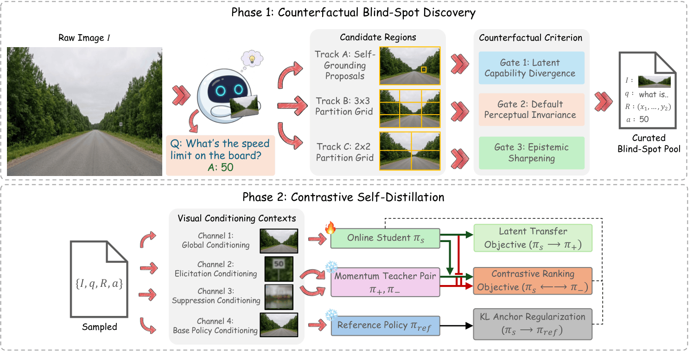
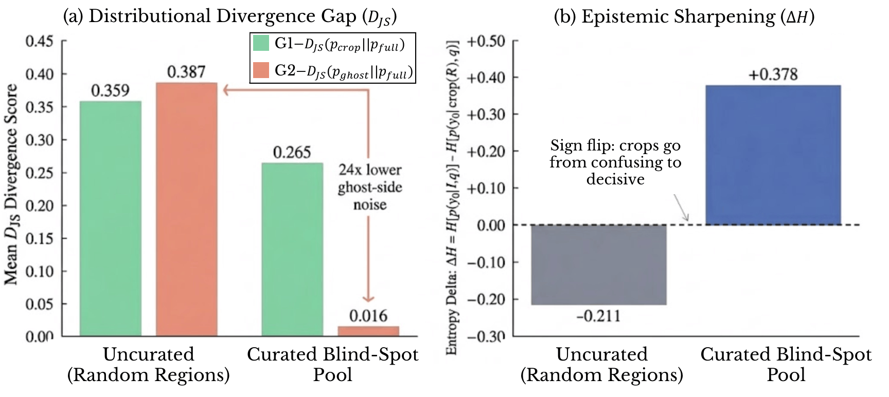

Abstract
Most self-improvement methods for multimodal large language models (MLLMs) rely on rewards that give only a coarse, scalar signal. Distillation is a richer alternative because it provides dense, token-level supervision, but in the visual domain it usually needs a privileged view of the input built with external annotations, tools, or a stronger model. We introduce CVPD (Contrastive Counterfactual Visual Process Distillation), which, as far as we know, is the first fully self-contained framework for dense, on-policy, token-level visual self-distillation. CVPD looks for visual blind spots: regions where zooming in changes and sharpens the model's answer, while removing that same region barely changes its full-image behavior. These regions show that the model already has the perceptual information but simply is not using it. We propose a three-gate Counterfactual Criterion that finds these regions directly from the model's own responses and turns them into dense, contrastive supervision for self-distillation. On Qwen3-VL-8B-Instruct, CVPD outperforms six self-evolving baselines across twelve benchmarks, including methods that use external GPT-4o supervision, without a single regression. It gains +3.60 on OCRBench, +3.38 on MMStar Fine-Grained Perception, and +3.08 on MMStar Logical Reasoning, while also improving or maintaining performance on broader multimodal benchmarks.
Method
CVPD uses just a single model, in two phases. In Phase 1, the model writes a fine-grained question and answer for a raw, unlabeled image, proposes candidate regions through self-grounding and coarse-to-fine grid partitions, and applies a three-gate Counterfactual Criterion to keep only the regions that are genuine blind spots. In Phase 2, each curated tuple sets up four policies from the same backbone, each seeing a different view of the image: an online student, a crop-conditioned positive teacher, a ghost-conditioned negative teacher, and a frozen reference policy. A contrastive self-distillation objective is then trained entirely on-policy, with no external rewards, annotations, or stronger models involved.

Phase 1 (Counterfactual Blind-Spot Discovery): candidate regions from self-grounding, a 3×3 grid, and a 2×2 grid are filtered by the three-gate Counterfactual Criterion into a Curated Blind-Spot Pool. Phase 2 (Contrastive Self-Distillation): the online student learns from a momentum crop teacher and a momentum ghost teacher, anchored to a frozen reference policy.
G1: Latent Capability Divergence
The crop view has to move the answer away from the full-image baseline. This shows the crop-conditioned teacher knows something the student is not yet using.
G2: Default Perceptual Invariance
Blurring out that same region should barely change the full-image answer. This confirms the model was not really using that region, so the ghost view is a fair stand-in for its inattentive default.
G3: Epistemic Sharpening
The crop has to sharpen the model's prediction, not just change it. This filters out regions that add noise or confusion instead of resolving it.
Results
CVPD beats six self-evolving baselines on all twelve benchmarks at both the 4B and 8B scales, including VisionZero variants that use GPT-4o during dataset construction. It is also the only method that does not lose points on any single benchmark compared to the base model. The biggest gains show up on tasks that need precise, localized visual attention, like OCR and fine-grained perception, while broader multimodal benchmarks improve too, with no trade-offs.
+3.60
OCRBench (8B)
+3.38
MMStar Fine-Grained (8B)
+3.08
MMStar Logical Reasoning (8B)
0
regressions across 12 benchmarks
Results Across Model Scales
Base vs. CVPD on Qwen3-VL at two scales. CVPD improves every benchmark with no task tradeoffs. All numbers are from the paper.
| Benchmark | Base | CVPD |
|---|---|---|
| Fine-Grained Visual Grounding | ||
| OCRBench | 81.70 | 84.35 |
| InfoVQA | 77.73 | 79.15 |
| MMStar Fine-Grained | 60.86 | 63.35 |
| MMStar Instance Reasoning | 69.83 | 71.20 |
| MMStar Logical Reasoning | 62.96 | 65.25 |
| Broader Multimodal Benchmarks | ||
| AI2D | 80.10 | 82.35 |
| ScienceQA | 87.51 | 89.05 |
| CV-Bench | 85.45 | 87.15 |
| RealWorldQA | 71.24 | 73.45 |
| MMBench-EN | 83.51 | 84.60 |
| MME-Perception | 1702.9 | 1715.5 |
| SEED-Image | 78.05 | 78.20 |
| Benchmark | Base | CVPD |
|---|---|---|
| Fine-Grained Visual Grounding | ||
| OCRBench | 82.80 | 86.40 |
| InfoVQA | 81.23 | 82.82 |
| MMStar Fine-Grained | 60.25 | 63.63 |
| MMStar Instance Reasoning | 73.03 | 74.87 |
| MMStar Logical Reasoning | 61.69 | 64.77 |
| Broader Multimodal Benchmarks | ||
| AI2D | 83.31 | 84.63 |
| ScienceQA | 90.88 | 92.81 |
| CV-Bench | 86.13 | 88.27 |
| RealWorldQA | 69.28 | 71.07 |
| MMBench-EN | 84.71 | 86.10 |
| MME-Perception | 1716.5 | 1733.1 |
| SEED-Image | 78.18 | 78.78 |
Why it works: isolating genuine blind spots

Measured over 6,791 candidate regions from 500 raw images. (Left) Uncurated regions perturb the model in similar ways under crop and ghost interventions (0.359 vs. 0.387 mean DJS). Regions that pass the Counterfactual Criterion keep strong crop-side divergence (0.265) while cutting ghost-side divergence down to 0.016, a 24× drop in irrelevant noise. (Right) Curation also flips the entropy delta from −0.211 to +0.378, showing that the selected crops actually sharpen the model's answer instead of just changing it.
Ablations back this up. Swapping the Counterfactual Criterion for randomly picked regions causes the biggest drop in performance (OCRBench −2.60, MMStar Fine-Grained −2.53). Removing the contrastive ranking objective, so the student only learns from the crop teacher and never sees the ghost-conditioned negative teacher, causes the second biggest drop (OCRBench −2.30, MMStar Fine-Grained −2.16). Combining all three region-proposal tracks (self-grounding, a 2×2 grid, and a 3×3 grid) also beats any single source on its own, which shows they each catch different blind spots at different spatial scales.
BibTeX
@inproceedings{venkatraman2026cvpd,
title = {Perception Before Supervision: Self-Contained Visual Distillation from Counterfactual Blind Spots},
author = {Venkatraman, Shravan and Thawakar, Omkar and Thawkar, Ritesh and
Shaker, Abdelrahman and Anwer, Rao Muhammad},
booktitle = {British Machine Vision Conference (BMVC)},
year = {2026}
}